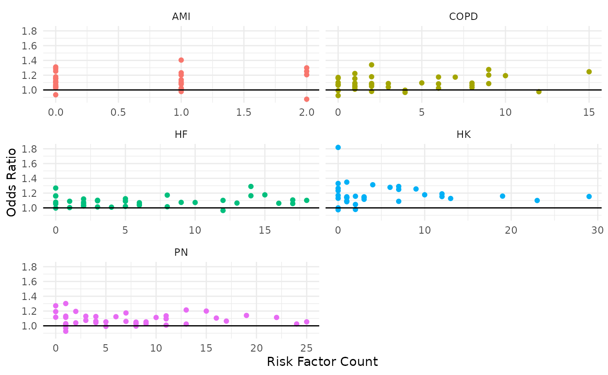

Investigating a Hospital-Specific Report (HSR)
Analysis strategies to gain insight into HRRP program results.
investigating-an-hsr.RmdNote: CMS changed the format of Hospital-Specific Reports (HSRs) for FY2026 (see here). The current HSR functions support Excel-based formats through FY2025. However, analysis strategies are still relevant.
As part of the Hospital Readmissions Reduction Program (HRRP), the Centers for Medicare & Medicaid Services (CMS) provides a detailed, annual program summary report (called the Hospital-Specific Report (HSR)) to hospitals that includes details on the penalty calculation for the upcoming fiscal year, such as discharge-level data, dually-eligible discharge lists, cohort-level rollup, and the penalty amount. There is a defined review and correction period in which hospitals can use these reports to ensure the penalty being enforced by CMS is accurate. It occurs approximately 1 month before the new fiscal year, thus it is a time-critical event (see historical date ranges below for reference with the built-in package datasets):
# Extract date ranges
readmit::hrrp_keydates |>
dplyr::select(
ProgramYear,
dplyr::matches("^(Payment|Review)")
) |>
dplyr::distinct()
#> # A tibble: 9 × 5
#> ProgramYear PaymentStartDate PaymentEndDate ReviewStartDate ReviewEndDate
#> <dbl> <date> <date> <chr> <chr>
#> 1 2027 2026-10-01 2027-09-30 NA NA
#> 2 2026 2025-10-01 2026-09-30 2025-08-12 2025-09-10
#> 3 2025 2024-10-01 2025-09-30 2024-08-12 2024-09-10
#> 4 2024 2023-10-01 2024-09-30 2023-08-08 2023-09-07
#> 5 2023 2022-10-01 2023-09-30 2022-08-08 2022-09-07
#> 6 2022 2021-10-01 2022-09-30 2021-08-09 2021-09-08
#> 7 2021 2020-10-01 2021-09-30 2020-08-10 2020-09-09
#> 8 2020 2019-10-01 2020-09-30 2019-08-09 2019-09-09
#> 9 2019 2018-10-01 2019-09-30 2018-08-06 2018-09-05The report file itself (through FY2025) is a large, multi-tab
Microsoft Excel document where the structured part of the data is
ambiguously placed throughout, thus we need tools to parse it out into a
usable format. That is what some functions in the readmit
package are for. In this article, we go through the tools that are
available, what they do, and then provide some strategies/approaches for
how hospitals can use these tools to analyze their own HSR’s to gain
deeper insight into HRRP results and readmissions more broadly.
The Toolbox
First, we’ll start by taking a look at what relevant functions are
available to us, what they do, and how to use them. For our purposes,
these are all of the functions prefixed like hsr_*. We’ll
do this roughly in order of how the report is laid out, and how the HRRP
results roll up.
0. Mock Reports
As the developer of this package, I don’t have access to hospitals’ actual HSR’s, as they contain senstivie patient information (i.e., PHI) and thus are not publicly available. So what we have to work with are mock reports that CMS provides to the public that are meant to mimick the format a hospital can expect their report to be in. It just includes fake data.
Note: CMS changed the format of Hospital-Specific Reports (HSRs) for FY2026 (see here). The current HSR functions support Excel-based formats through FY2025.
Nevertheless, these provide a useful playground to analyze the
mechanics of the program. We’ll start by finding a report with the
hsr_mock_reports() function:
- Using no arguments lists the various mock files included in the package
hsr_mock_reports()
#> [1] "FY2019_HRRP_MockHSR.xlsx" "FY2020_HRRP_MockHSR.xlsx"
#> [3] "FY2021_HRRP_MockHSR.xlsx" "FY2022_HRRP_MockHSR.xlsx"
#> [5] "FY2023_HRRP_MockHSR.xlsx" "FY2024_HRRP_MockHSR.xlsx"
#> [7] "FY2025_HRRP_MockHSR.xlsx"- Entering one of the listed file names will return the complete path to the file in the packages location on your computer
my_report <- hsr_mock_reports("FY2025_HRRP_MockHSR.xlsx")
my_report
#> [1] "/home/runner/work/_temp/Library/readmit/extdata/FY2025_HRRP_MockHSR.xlsx"Now we can use that HSR path with other package functions. Of course, you would just point to your own HSR when analyzing your hospital’s reports.
1. Program Summary
We’ll start with high level program results. Ultimately, all of the
moving parts in the HRRP roll up into a single number: the penalty
amount applied to your hospital. This is typically the first table in
your report. We can parse it out of the report with the
hsr_payment_summary() function:
my_payment_summary <- hsr_payment_summary(my_report)
my_payment_summary
#> # A tibble: 1 × 7
#> Number of Dually Eligible Stays…¹ Total Number of Stay…² `Dual Proportion [c]`
#> <dbl> <dbl> <dbl>
#> 1 186 856 0.217
#> # ℹ abbreviated names: ¹`Number of Dually Eligible Stays (Numerator) [a]`,
#> # ²`Total Number of Stays(Denominator) [b]`
#> # ℹ 4 more variables: `Peer Group Assignment [d]` <dbl>,
#> # `Neutrality Modifier [e]` <dbl>, `Payment Reduction Percentage [f]` <dbl>,
#> # `Payment Adjustment Factor [g]` <dbl>We now have this information in a data frame that we can manipulate as needed:
my_payment_summary |>
tidyr::pivot_longer(dplyr::everything())
#> # A tibble: 7 × 2
#> name value
#> <chr> <dbl>
#> 1 Number of Dually Eligible Stays (Numerator) [a] 186
#> 2 Total Number of Stays(Denominator) [b] 856
#> 3 Dual Proportion [c] 0.217
#> 4 Peer Group Assignment [d] 3
#> 5 Neutrality Modifier [e] 0.965
#> 6 Payment Reduction Percentage [f] 0.0007
#> 7 Payment Adjustment Factor [g] 0.999There are also helper functions to extract specific components from this table.
hsr_payment_penalty(my_report)
#> [1] 7e-04
hsr_dual_proportion(my_report)
#> [1] 0.2172897
hsr_peer_group(my_report)
#> [1] 3See ?hsr_payment_summary for all of them.
2. Cohort Summary
The overall payment penalty a hospital receives is a weighted average
of penalities applied to the individual cohorts. These details are
typically in the second table (tab) of the HSR, which we can import with
hsr_cohort_summary():
cohort_summary <- hsr_cohort_summary(my_report)
cohort_summary
#> # A tibble: 6 × 10
#> `Measure [a]` `Number of Eligible Discharges [b]` Number of Readmissions Amo…¹
#> <chr> <dbl> <dbl>
#> 1 AMI 2 0
#> 2 COPD 18 3
#> 3 HF 25 2
#> 4 Pneumonia 32 5
#> 5 CABG NA NA
#> 6 THA/TKA 45 0
#> # ℹ abbreviated name: ¹`Number of Readmissions Among Eligible Discharges [c]`
#> # ℹ 7 more variables: `Predicted Readmission Rate [d]` <dbl>,
#> # `Expected Readmission Rate [e]` <dbl>,
#> # `Excess Readmission Ratio (ERR) [f]` <dbl>,
#> # `Peer Group Median ERR [g]` <dbl>, `Penalty Indicator (Yes/No) [h]` <chr>,
#> # `Ratio of DRG Payments Per Measure to Total Payments [i]` <dbl>,
#> # `National Observed Readmission Rate [j]` <dbl>We can then, for example, reconcile the overall penalty amount based on what is in this table:
cohort_summary |>
# Filter to cohorts with a penalty
dplyr::filter(`Penalty Indicator (Yes/No) [h]` == "Yes") |>
# Compute the contribution of each penalized cohort
dplyr::mutate(
Contribution =
`Ratio of DRG Payments Per Measure to Total Payments [i]` *
(
`Excess Readmission Ratio (ERR) [f]` -
`Peer Group Median ERR [g]`
)
) |>
# Roll up into final calculation
dplyr::summarize(
Penalty = sum(Contribution) * hsr_neutrality_modifier(my_report)
)
#> # A tibble: 1 × 1
#> Penalty
#> <dbl>
#> 1 0.000746What we did here was:
- Find cohorts who received a penalty who were eligible
- A cohort must have at least 25 discharges to be eligible
- Then, the excess readmission ratio (ERR) must be greater than the assigned peer group’s median ERR
- Find the difference between the hospital’s ERR compared to the peer group median ERR
- Multiply that by the ratio of DRG payments for that cohort
- This is a measure of the volume of patients with this condition are treated at the hospital
- Sum those contributions over each cohort
- Multiply that by the neutrality modifier in the
hsr_payment_summary()table
That’s how the penalty is computed, from cohort summary level.
3. Discharges
Note: Because we are using mock reports, the dates in these files are erroneous and thus R doesn’t interpret them as dates. However, your hospital report has real dates and thus R should automatically parse them as such.
The HSR also contains discharge-level data on the individual patients
that actually contributed to the program. There is a separate table/tab
for each of the cohorts. We can use the hsr_discharges()
function to import them for a specified cohort:
hsr_discharges(my_report, "COPD")
#> # A tibble: 21 × 17
#> `ID Number` MBI `Medical Record Number` `Beneficiary DOB`
#> <int> <chr> <chr> <chr>
#> 1 1 9AA9AA9AA99 99999A 99/99/9999
#> 2 2 9AA9AA9AA99 99999A 99/99/9999
#> 3 3 9AA9AA9AA99 99999A 99/99/9999
#> 4 4 9AA9AA9AA99 99999A 99/99/9999
#> 5 5 9AA9AA9AA99 99999A 99/99/9999
#> 6 6 9AA9AA9AA99 99999A 99/99/9999
#> 7 7 9AA9AA9AA99 99999A 99/99/9999
#> 8 8 9AA9AA9AA99 99999A 99/99/9999
#> 9 9 9AA9AA9AA99 99999A 99/99/9999
#> 10 10 9AA9AA9AA99 99999A 99/99/9999
#> # ℹ 11 more rows
#> # ℹ 13 more variables: `Admission Date of Index Stay` <chr>,
#> # `Discharge Date of Index Stay` <chr>,
#> # `Cohort Inclusion/Exclusion Indicator` <chr>, `Index Stay (Yes/No)` <chr>,
#> # `Principal Discharge Diagnosis of Index Stay` <chr>,
#> # `Discharge Destination` <chr>,
#> # `Unplanned Readmission within 30 Days (Yes/No) [a]` <chr>, …We get some patient identifying information, including the specific dates associated with the index and readmission hospitalizations, whether or not the readmission occurred at the same hospital, diagnosis codes, etc., which is all very valuable information that we can explore to gain insights from (and what we’ll do later).
There are also options available in the function to refine the result:
Eligible Cases
The eligible_only argument can be used to only included
discharges that were actually included in HRRP evaluation:
hsr_discharges(
file = my_report,
cohort = "COPD",
eligible_only = TRUE
)
#> # A tibble: 18 × 17
#> `ID Number` MBI `Medical Record Number` `Beneficiary DOB`
#> <int> <chr> <chr> <chr>
#> 1 1 9AA9AA9AA99 99999A 99/99/9999
#> 2 2 9AA9AA9AA99 99999A 99/99/9999
#> 3 3 9AA9AA9AA99 99999A 99/99/9999
#> 4 4 9AA9AA9AA99 99999A 99/99/9999
#> 5 5 9AA9AA9AA99 99999A 99/99/9999
#> 6 6 9AA9AA9AA99 99999A 99/99/9999
#> 7 7 9AA9AA9AA99 99999A 99/99/9999
#> 8 8 9AA9AA9AA99 99999A 99/99/9999
#> 9 9 9AA9AA9AA99 99999A 99/99/9999
#> 10 10 9AA9AA9AA99 99999A 99/99/9999
#> 11 11 9AA9AA9AA99 99999A 99/99/9999
#> 12 12 9AA9AA9AA99 99999A 99/99/9999
#> 13 13 9AA9AA9AA99 99999A 99/99/9999
#> 14 14 9AA9AA9AA99 99999A 99/99/9999
#> 15 15 9AA9AA9AA99 99999A 99/99/9999
#> 16 16 9AA9AA9AA99 99999A 99/99/9999
#> 17 17 9AA9AA9AA99 99999A 99/99/9999
#> 18 18 9AA9AA9AA99 99999A 99/99/9999
#> # ℹ 13 more variables: `Admission Date of Index Stay` <chr>,
#> # `Discharge Date of Index Stay` <chr>,
#> # `Cohort Inclusion/Exclusion Indicator` <chr>, `Index Stay (Yes/No)` <chr>,
#> # `Principal Discharge Diagnosis of Index Stay` <chr>,
#> # `Discharge Destination` <chr>,
#> # `Unplanned Readmission within 30 Days (Yes/No) [a]` <chr>,
#> # `Planned Readmission within 30 Days (Yes/No)` <chr>, …Notice that this row count matches what was reported as the COPD
denominator in the cohort_summary:
Risk Factors
Also included in these tables are the indicators of risk factors that
are used in the statistical models to estimate individual adjusted
readmission risks. We can use the risk_factors argument to
extract those for each patient:
hsr_discharges(
file = my_report,
cohort = "COPD",
eligible_only = TRUE,
risk_factors = TRUE,
discharge_phi = FALSE
)
#> # A tibble: 18 × 42
#> `ID Number` `Years Over 65 (continuous)` `History of Mechanical Ventilation`
#> <int> <dbl> <dbl>
#> 1 1 5 1
#> 2 2 8 1
#> 3 3 23 0
#> 4 4 15 0
#> 5 5 7 0
#> 6 6 1 0
#> 7 7 12 0
#> 8 8 18 0
#> 9 9 6 0
#> 10 10 11 0
#> 11 11 15 0
#> 12 12 13 0
#> 13 13 5 0
#> 14 14 12 0
#> 15 15 12 0
#> 16 16 24 0
#> 17 17 12 0
#> 18 18 11 0
#> # ℹ 39 more variables: `Sleep-Disordered Breathing` <dbl>,
#> # `History of COVID-19` <dbl>,
#> # `Severe Infection; Other Infectious Diseases` <dbl>,
#> # `Metastatic Cancer and Acute Leukemia` <dbl>,
#> # `Lung and Other Severe Cancers` <dbl>,
#> # `Lymphatic, Head and Neck, Brain, and Other Major Cancers; Breast, Colorectal and Other Cancers and Tumors; Other Respiratory and Heart Neoplasms` <dbl>,
#> # `Other Digestive and Urinary Neoplasms` <dbl>, …This data can then be explored further to understand risk factor
prevalence and how that relates to model weights, etc. (again, covered
later). Notice the
discharge_phi argument was used to prevent the date
information from being returned.
4. Model Coefficients
The ERR is calculated based on an aggregated roll up of individual
adjusted readmission risks derived from a random-intercept logistic
regression model. The first row in the discharge table contains the
coefficients for this model. We can use the
hsr_coefficients() function to extract them:
copd_model <- hsr_coefficients(my_report, "COPD")
copd_model
#> # A tibble: 43 × 2
#> Factor Value
#> <chr> <dbl>
#> 1 Years Over 65 (continuous) -0.00550
#> 2 History of Mechanical Ventilation 0.293
#> 3 Sleep-Disordered Breathing -0.0339
#> 4 History of COVID-19 -0.0200
#> 5 Severe Infection; Other Infectious Diseases 0.0381
#> 6 Metastatic Cancer and Acute Leukemia 0.201
#> 7 Lung and Other Severe Cancers 0.156
#> 8 Lymphatic, Head and Neck, Brain, and Other Major Cancers; Breast, C… -0.00343
#> 9 Other Digestive and Urinary Neoplasms -0.0792
#> 10 Diabetes Mellitus (DM) or DM Complications 0.0891
#> # ℹ 33 more rowsThis allows us to do things like assess the relative contribution of risk factors to the estimated readmission rates or use the risk factor dataset above to compute individual level readmission risks.
Intercept Terms
The predicted and expected readmission rates only differ in the intercept terms applied to the prediction (thus it is a constant shift for all patients). We can see these at the end of this data frame:
copd_model |> tail()
#> # A tibble: 6 × 2
#> Factor Value
#> <chr> <dbl>
#> 1 Renal Failure 0.160
#> 2 Decubitus Ulcer or Chronic Skin Ulcer 0.0729
#> 3 Cellulitis, Local Skin Infection 0.0412
#> 4 Vertebral Fractures Without Spinal Cord Injury 0.0822
#> 5 HOSP_EFFECT -2.53
#> 6 AVG_EFFECT -2.535. Readmission Risks
We could take the risk factor output from
hsr_discharges() combined with the coefficients from
hsr_coefficients() and reconcile each patient’s
predicted and expected readmission risk. But the
hsr_readmission_risks() function can do all of that for
us:
risks <- hsr_readmission_risks(my_report, "COPD")
risks
#> # A tibble: 18 × 3
#> `ID Number` Predicted Expected
#> <int> <dbl> <dbl>
#> 1 1 0.260 0.260
#> 2 2 0.266 0.266
#> 3 3 0.227 0.227
#> 4 4 0.0990 0.0989
#> 5 5 0.0935 0.0935
#> 6 6 0.130 0.130
#> 7 7 0.156 0.156
#> 8 8 0.190 0.190
#> 9 9 0.0842 0.0842
#> 10 10 0.100 0.100
#> 11 11 0.129 0.129
#> 12 12 0.111 0.111
#> 13 13 0.350 0.349
#> 14 14 0.127 0.127
#> 15 15 0.158 0.158
#> 16 16 0.168 0.168
#> 17 17 0.118 0.118
#> 18 18 0.210 0.210This just takes a weighted-sum of the risk factors and coefficients, adds the corresponding intercept, and then maps it to a probability through the logistic function.
The cohort-level predicted and expected readmission rates are just the averages of these columns across all eligible patients:
risks |>
dplyr::summarize(
Discharges = dplyr::n(),
Predicted = mean(Predicted),
Expected = mean(Expected),
ERR = Predicted / Expected
)
#> # A tibble: 1 × 4
#> Discharges Predicted Expected ERR
#> <int> <dbl> <dbl> <dbl>
#> 1 18 0.165 0.165 1.00Again, looking at our cohort summary, we can see these match:
cohort_summary |>
dplyr::filter(
`Measure [a]` == "COPD"
) |>
dplyr::select(
Discharges = `Number of Eligible Discharges [b]`,
Predicted = `Predicted Readmission Rate [d]`,
Expected = `Expected Readmission Rate [e]`,
ERR = `Excess Readmission Ratio (ERR) [f]`
)
#> # A tibble: 1 × 4
#> Discharges Predicted Expected ERR
#> <dbl> <dbl> <dbl> <dbl>
#> 1 18 0.165 0.165 1.006. Dual Stays
CMS puts hospitals into peer groups based on the relative proportion
of Medicare patients who are also eligible for Medicaid. This is a
measure of socioeconomic status for the hospital population so hospitals
are being compared only against other hospitals that are similar (in
this regard). These aggregated quantities were found in
hsr_payment_summary() result:
my_payment_summary
#> # A tibble: 1 × 7
#> Number of Dually Eligible Stays…¹ Total Number of Stay…² `Dual Proportion [c]`
#> <dbl> <dbl> <dbl>
#> 1 186 856 0.217
#> # ℹ abbreviated names: ¹`Number of Dually Eligible Stays (Numerator) [a]`,
#> # ²`Total Number of Stays(Denominator) [b]`
#> # ℹ 4 more variables: `Peer Group Assignment [d]` <dbl>,
#> # `Neutrality Modifier [e]` <dbl>, `Payment Reduction Percentage [f]` <dbl>,
#> # `Payment Adjustment Factor [g]` <dbl>The hsr_dual_stays() function extracts the
discharge-level data corresponding to the numerator of the ratio:
hsr_dual_stays(my_report)
#> # A tibble: 186 × 6
#> `ID Number` MBI `Beneficiary DOB` `Admission Date` `Discharge Date`
#> <int> <chr> <chr> <chr> <chr>
#> 1 1 9AA9AA9AA99 99/99/9999 99/99/9999 99/99/9999
#> 2 2 9AA9AA9AA99 99/99/9999 99/99/9999 99/99/9999
#> 3 3 9AA9AA9AA99 99/99/9999 99/99/9999 99/99/9999
#> 4 4 9AA9AA9AA99 99/99/9999 99/99/9999 99/99/9999
#> 5 5 9AA9AA9AA99 99/99/9999 99/99/9999 99/99/9999
#> 6 6 9AA9AA9AA99 99/99/9999 99/99/9999 99/99/9999
#> 7 7 9AA9AA9AA99 99/99/9999 99/99/9999 99/99/9999
#> 8 8 9AA9AA9AA99 99/99/9999 99/99/9999 99/99/9999
#> 9 9 9AA9AA9AA99 99/99/9999 99/99/9999 99/99/9999
#> 10 10 9AA9AA9AA99 99/99/9999 99/99/9999 99/99/9999
#> # ℹ 176 more rows
#> # ℹ 1 more variable: `Claim Type` <chr>We can see that the row count of this discharge level data matches the first number in the preceding table.
Analysis Strategies
In this section we’ll go through a collection data analyses that can
be conducted, using functions in readmit as support, to
validate HSR calculations and/or to gain deeper insights into HRRP
results.
1. Validating the Penalty Calculation
We previously calculated the payment penalty starting from the cohort-level results. However, as an initial validation step, it is important to go through the mechanics of reconciling the penalty calculation from the discharge-level data to ensure comprehension of how it works.
Note: We’ll go the slower, more tedious way to do this in the steps below in order to capture all intermediate details for understanding, but will callout where certain steps can be more efficient.
Let’s extract the cohort strings we need to plug into
various function arguments:
cohorts <- setdiff(names(hrrp_cohort_inclusion), "ProgramYear")
cohorts
#> [1] "AMI" "COPD" "HF" "PN" "CABG" "HK"i. Extract Discharges
The first thing we need to is extract the set of discharges (i.e.,
the denominator) that contribute to program for each cohort. To
do this, we’ll iterate through the different cohorts and sequentially
use the hsr_discharges() function to get the row
identifiers that should be included:
eligible_discharges <-
setdiff(cohorts, "CABG") |>
# Iterate each cohort
purrr::map_df(
# Import eligible discharges
~hsr_discharges(
file = my_report,
cohort = .x,
eligible_only = TRUE
) |>
# Keep the row identifiers
dplyr::select(`ID Number`) |>
# Add cohort identifier
tibble::add_column(Cohort = .x)
)
eligible_discharges
#> # A tibble: 122 × 2
#> `ID Number` Cohort
#> <int> <chr>
#> 1 1 AMI
#> 2 2 AMI
#> 3 1 COPD
#> 4 2 COPD
#> 5 3 COPD
#> 6 4 COPD
#> 7 5 COPD
#> 8 6 COPD
#> 9 7 COPD
#> 10 8 COPD
#> # ℹ 112 more rowsWe can check the counts of these:
table(eligible_discharges$Cohort)
#>
#> AMI COPD HF HK PN
#> 2 18 25 45 32You can validate that we obtained the correct counts by looking at the cohort summary we previously created.
cohort_summary
#> # A tibble: 6 × 10
#> `Measure [a]` `Number of Eligible Discharges [b]` Number of Readmissions Amo…¹
#> <chr> <dbl> <dbl>
#> 1 AMI 2 0
#> 2 COPD 18 3
#> 3 HF 25 2
#> 4 Pneumonia 32 5
#> 5 CABG NA NA
#> 6 THA/TKA 45 0
#> # ℹ abbreviated name: ¹`Number of Readmissions Among Eligible Discharges [c]`
#> # ℹ 7 more variables: `Predicted Readmission Rate [d]` <dbl>,
#> # `Expected Readmission Rate [e]` <dbl>,
#> # `Excess Readmission Ratio (ERR) [f]` <dbl>,
#> # `Peer Group Median ERR [g]` <dbl>, `Penalty Indicator (Yes/No) [h]` <chr>,
#> # `Ratio of DRG Payments Per Measure to Total Payments [i]` <dbl>,
#> # `National Observed Readmission Rate [j]` <dbl>One caveat was that we already knew there weren’t any
CABG discharges (via the NA in the
cohort_summary table), so we pre-excluded this from our
cohort list we iterated through (as it would have caused an error
otherwise).
ii. Extract Risk Factors
Next we need to extract the sets of risk factors for each cohort that
go into the readmission risk model. We can again do this by iterating
through the cohort list with hsr_discharges,
but extracting the risk factors as well with
risk_factors=TRUE:
setdiff(cohorts, "CABG") |>
# Iterate each cohort
purrr::map(
# Import eligible discharges
~hsr_discharges(
file = my_report,
cohort = .x,
risk_factors = TRUE,
discharge_phi = FALSE
)
)
#> [[1]]
#> # A tibble: 2 × 33
#> `ID Number` `Years Over 65 (continuous)` Male Anterior Myocardial Infarctio…¹
#> <int> <dbl> <dbl> <dbl>
#> 1 1 31 1 0
#> 2 2 27 1 0
#> # ℹ abbreviated name: ¹`Anterior Myocardial Infarction `
#> # ℹ 29 more variables: `Non-Anterior Location of Myocardial Infarction` <dbl>,
#> # `History of Coronary Artery Bypass Graft (CABG) Surgery` <dbl>,
#> # `History of Percutaneous Transluminal Coronary Angioplasty (PTCA)` <dbl>,
#> # `History of COVID-19` <dbl>,
#> # `Severe Infection; Other Infectious Diseases` <dbl>,
#> # `Metastatic Cancer and Acute Leukemia` <dbl>, Cancer <dbl>, …
#>
#> [[2]]
#> # A tibble: 21 × 42
#> `ID Number` `Years Over 65 (continuous)` `History of Mechanical Ventilation`
#> <int> <dbl> <dbl>
#> 1 1 5 1
#> 2 2 8 1
#> 3 3 23 0
#> 4 4 15 0
#> 5 5 7 0
#> 6 6 1 0
#> 7 7 12 0
#> 8 8 18 0
#> 9 9 6 0
#> 10 10 11 0
#> # ℹ 11 more rows
#> # ℹ 39 more variables: `Sleep-Disordered Breathing` <dbl>,
#> # `History of COVID-19` <dbl>,
#> # `Severe Infection; Other Infectious Diseases` <dbl>,
#> # `Metastatic Cancer and Acute Leukemia` <dbl>,
#> # `Lung and Other Severe Cancers` <dbl>,
#> # `Lymphatic, Head and Neck, Brain, and Other Major Cancers; Breast, Colorectal and Other Cancers and Tumors; Other Respiratory and Heart Neoplasms` <dbl>, …
#>
#> [[3]]
#> # A tibble: 30 × 39
#> `ID Number` `Years Over 65 (continuous)` Male History of Coronary Artery B…¹
#> <int> <dbl> <dbl> <dbl>
#> 1 1 8 1 0
#> 2 2 25 1 1
#> 3 3 9 0 0
#> 4 4 9 0 0
#> 5 5 30 0 0
#> 6 6 13 0 0
#> 7 7 12 1 1
#> 8 8 7 1 1
#> 9 9 25 1 0
#> 10 10 22 0 0
#> # ℹ 20 more rows
#> # ℹ abbreviated name: ¹`History of Coronary Artery Bypass Graft (CABG) Surgery`
#> # ℹ 35 more variables: `History of COVID-19` <dbl>,
#> # `Metastatic Cancer and Acute Leukemia` <dbl>, Cancer <dbl>,
#> # `Diabetes Mellitus (DM) or DM Complications` <dbl>,
#> # `Protein-Calorie Malnutrition` <dbl>,
#> # `Other Significant Endocrine and Metabolic Disorders; Disorders of Fluid/Electrolyte/Acid-base Balance` <dbl>, …
#>
#> [[4]]
#> # A tibble: 45 × 43
#> `ID Number` `Years Over 65 (continuous)` Male History of Coronary Artery B…¹
#> <int> <dbl> <dbl> <dbl>
#> 1 1 13 0 0
#> 2 2 16 1 0
#> 3 3 6 1 0
#> 4 4 14 1 0
#> 5 5 16 1 0
#> 6 6 18 1 0
#> 7 7 15 1 0
#> 8 8 13 0 0
#> 9 9 9 0 0
#> 10 10 4 0 0
#> # ℹ 35 more rows
#> # ℹ abbreviated name: ¹`History of Coronary Artery Bypass Graft (CABG) Surgery`
#> # ℹ 39 more variables: `History of COVID-19` <dbl>,
#> # `Severe Infection; Other Infectious Diseases` <dbl>,
#> # `Septicemia, Sepsis, Systemic Inflammatory Response Syndrome/Shock` <dbl>,
#> # `Metastatic Cancer and Acute Leukemia` <dbl>,
#> # `Lung and Other Severe Cancers` <dbl>, `Lymphoma; Other Cancers` <dbl>, …
#>
#> [[5]]
#> # A tibble: 51 × 35
#> `ID Number` `Years Over 65 (continuous)` Male Index Admissions with an Ele…¹
#> <int> <dbl> <dbl> <dbl>
#> 1 1 1 1 0
#> 2 2 7 1 1
#> 3 3 1 0 0
#> 4 4 6 1 0
#> 5 5 1 1 0
#> 6 6 11 1 0
#> 7 7 14 0 0
#> 8 8 16 0 0
#> 9 9 1 0 0
#> 10 10 16 0 1
#> # ℹ 41 more rows
#> # ℹ abbreviated name: ¹`Index Admissions with an Elective THA Procedure`
#> # ℹ 31 more variables: `Number of Procedures (two vs. one)` <dbl>,
#> # `Other Congenital Deformity of Hip (Joint)` <dbl>,
#> # `Post Traumatic Osteoarthritis` <dbl>, `History of COVID-19` <dbl>,
#> # `Severe Infection; Other Infectious Diseases` <dbl>,
#> # `Metastatic Cancer and Acute Leukemia` <dbl>, Cancer <dbl>, …Notice that we get the risk factors for each cohort, but all of the
columns are different since each cohort has a different model. So one
thing we can do is pivot the data with
tidyr::pivot_longer() to make a long and narrow data frame
so that it can all be binded together.
risk_factors <-
setdiff(cohorts, "CABG") |>
# Iterate each cohort
purrr::map_df(
# Import eligible discharges
~hsr_discharges(
file = my_report,
cohort = .x,
risk_factors = TRUE,
discharge_phi = FALSE
) |>
# Send risk factors down the rows
tidyr::pivot_longer(
cols = -`ID Number`,
names_to = "Factor",
values_to = "Value"
) |>
# Indicate cohort
tibble::add_column(Cohort = .x)
)
risk_factors
#> # A tibble: 5,689 × 4
#> `ID Number` Factor Value Cohort
#> <int> <chr> <dbl> <chr>
#> 1 1 "Years Over 65 (continuous)" 31 AMI
#> 2 1 "Male" 1 AMI
#> 3 1 "Anterior Myocardial Infarction " 0 AMI
#> 4 1 "Non-Anterior Location of Myocardial Infarction" 0 AMI
#> 5 1 "History of Coronary Artery Bypass Graft (CABG) Sur… 1 AMI
#> 6 1 "History of Percutaneous Transluminal Coronary Angi… 0 AMI
#> 7 1 "History of COVID-19" 0 AMI
#> 8 1 "Severe Infection; Other Infectious Diseases" 1 AMI
#> 9 1 "Metastatic Cancer and Acute Leukemia" 0 AMI
#> 10 1 "Cancer" 0 AMI
#> # ℹ 5,679 more rowsWe can then merge these (using dplyr::inner_join()) with
the eligilble discharges we previously identified to get the set of risk
factors for each eligible discharge:
risk_factors <-
risk_factors |>
# Join to get eligible only
dplyr::inner_join(
y = eligible_discharges,
by =
c(
"ID Number",
"Cohort"
)
)
risk_factors
#> # A tibble: 4,626 × 4
#> `ID Number` Factor Value Cohort
#> <int> <chr> <dbl> <chr>
#> 1 1 "Years Over 65 (continuous)" 31 AMI
#> 2 1 "Male" 1 AMI
#> 3 1 "Anterior Myocardial Infarction " 0 AMI
#> 4 1 "Non-Anterior Location of Myocardial Infarction" 0 AMI
#> 5 1 "History of Coronary Artery Bypass Graft (CABG) Sur… 1 AMI
#> 6 1 "History of Percutaneous Transluminal Coronary Angi… 0 AMI
#> 7 1 "History of COVID-19" 0 AMI
#> 8 1 "Severe Infection; Other Infectious Diseases" 1 AMI
#> 9 1 "Metastatic Cancer and Acute Leukemia" 0 AMI
#> 10 1 "Cancer" 0 AMI
#> # ℹ 4,616 more rowsOf course, we didn’t have to do this step separately from
step (i), as we could have just used the eligible_only
argument simultaneously, and ended up in the same place.
risk_factors <-
setdiff(cohorts, "CABG") |>
# Iterate each cohort
purrr::map_df(
# Import eligible discharges
~hsr_discharges(
file = my_report,
cohort = .x,
risk_factors = TRUE,
discharge_phi = FALSE,
eligible_only = TRUE
) |>
# Send risk factors down the rows
tidyr::pivot_longer(
cols = -`ID Number`,
names_to = "Factor",
values_to = "Value"
) |>
# Indicate cohort
tibble::add_column(Cohort = .x)
)
risk_factors
#> # A tibble: 4,626 × 4
#> `ID Number` Factor Value Cohort
#> <int> <chr> <dbl> <chr>
#> 1 1 "Years Over 65 (continuous)" 31 AMI
#> 2 1 "Male" 1 AMI
#> 3 1 "Anterior Myocardial Infarction " 0 AMI
#> 4 1 "Non-Anterior Location of Myocardial Infarction" 0 AMI
#> 5 1 "History of Coronary Artery Bypass Graft (CABG) Sur… 1 AMI
#> 6 1 "History of Percutaneous Transluminal Coronary Angi… 0 AMI
#> 7 1 "History of COVID-19" 0 AMI
#> 8 1 "Severe Infection; Other Infectious Diseases" 1 AMI
#> 9 1 "Metastatic Cancer and Acute Leukemia" 0 AMI
#> 10 1 "Cancer" 0 AMI
#> # ℹ 4,616 more rowsiii. Compute Individual Readmission Risks
The predicted and expected readmission rates are
computed for each discharge by plugging in each patient’s set of risk
factors into risk models developed by CMS. We can use the
hsr_coefficients() function to extract these:
model_weights <-
cohorts |>
# Iterate each cohort
purrr::map_df(
# Import eligible discharges
~hsr_coefficients(
file = my_report,
cohort = .x
) |>
# Indicate cohort
tibble::add_column(Cohort = .x)
)
model_weights
#> # A tibble: 225 × 3
#> Factor Value Cohort
#> <chr> <dbl> <chr>
#> 1 "Years Over 65 (continuous)" 0.00765 AMI
#> 2 "Male" -0.134 AMI
#> 3 "Anterior Myocardial Infarction " 0.271 AMI
#> 4 "Non-Anterior Location of Myocardial Infarction" 0.0712 AMI
#> 5 "History of Coronary Artery Bypass Graft (CABG) Surgery" 0.0233 AMI
#> 6 "History of Percutaneous Transluminal Coronary Angioplasty (… -0.0218 AMI
#> 7 "History of COVID-19" -0.0676 AMI
#> 8 "Severe Infection; Other Infectious Diseases" 0.0832 AMI
#> 9 "Metastatic Cancer and Acute Leukemia" 0.226 AMI
#> 10 "Cancer" 0.0440 AMI
#> # ℹ 215 more rowsTo use these in our calculations, we need to attach the model weights
for each cohort to our current risk_factors dataset using
dplyr::inner_join():
risk_factors <-
risk_factors |>
# Join to get weights
dplyr::inner_join(
y =
model_weights |>
# Rename the column
dplyr::rename(
Weight = Value
),
by =
c(
"Cohort",
"Factor"
)
)
risk_factors
#> # A tibble: 4,626 × 5
#> `ID Number` Factor Value Cohort Weight
#> <int> <chr> <dbl> <chr> <dbl>
#> 1 1 "Years Over 65 (continuous)" 31 AMI 0.00765
#> 2 1 "Male" 1 AMI -0.134
#> 3 1 "Anterior Myocardial Infarction " 0 AMI 0.271
#> 4 1 "Non-Anterior Location of Myocardial Infar… 0 AMI 0.0712
#> 5 1 "History of Coronary Artery Bypass Graft (… 1 AMI 0.0233
#> 6 1 "History of Percutaneous Transluminal Coro… 0 AMI -0.0218
#> 7 1 "History of COVID-19" 0 AMI -0.0676
#> 8 1 "Severe Infection; Other Infectious Diseas… 1 AMI 0.0832
#> 9 1 "Metastatic Cancer and Acute Leukemia" 0 AMI 0.226
#> 10 1 "Cancer" 0 AMI 0.0440
#> # ℹ 4,616 more rowsCompute the Linear Predictor
These are logistic regression models, so to convert to a risk estimate, we need to take the weighted-sum of each factor weight with the risk factor value for each discharge.
linear_predictors <-
risk_factors |>
# Compute weighted sum
dplyr::summarize(
LP = sum(Weight * Value),
.by =
c(
Cohort,
`ID Number`
)
)
linear_predictors
#> # A tibble: 122 × 3
#> Cohort `ID Number` LP
#> <chr> <int> <dbl>
#> 1 AMI 1 1.92
#> 2 AMI 2 0.749
#> 3 COPD 1 1.49
#> 4 COPD 2 1.52
#> 5 COPD 3 1.31
#> 6 COPD 4 0.321
#> 7 COPD 5 0.258
#> 8 COPD 6 0.633
#> 9 COPD 7 0.841
#> 10 COPD 8 1.08
#> # ℹ 112 more rowsYou can think of this as the “risk-adjustment” part, where we’ve adjusted each patient’s readmission risk based on their own clinical history. These are on the logit scale (so not yet probability/risk estimates), but it is what we assume to be linearly related to the outcome, thus we call it the “linear predictor”. However, we are still missing something: the intercept terms.
Add In the Intercepts
The predicted and expected readmission risks are derived from the same risk-adjusted model, the only difference being in the intercept term that is added to complete the linear predictor. We can see those in our model weight list:
model_weights |>
dplyr::filter(
stringr::str_detect(
Factor,
pattern = "EFFECT$"
)
)
#> # A tibble: 11 × 3
#> Factor Value Cohort
#> <chr> <dbl> <chr>
#> 1 HOSP_EFFECT -2.96 AMI
#> 2 AVG_EFFECT -2.95 AMI
#> 3 HOSP_EFFECT -2.53 COPD
#> 4 AVG_EFFECT -2.53 COPD
#> 5 HOSP_EFFECT -2.46 HF
#> 6 AVG_EFFECT -2.42 HF
#> 7 HOSP_EFFECT -2.51 PN
#> 8 AVG_EFFECT -2.51 PN
#> 9 AVG_EFFECT -2.70 CABG
#> 10 HOSP_EFFECT -4.41 HK
#> 11 AVG_EFFECT -4.28 HK- The
AVG_EFFECTcorresponds to the risk-shift (intercept) associated with being treated at the “average” hospital - The
HOSP_EFFECTcorresponds to the risk-shift (intercept) associated with being treated at your hospital
These are estimated by CMS using your discharge lists. They are done so after accounting for all of the risk factors, so by comparing them we get a measure of how much more or less likely a patient is to be readmitted at your hospital versus the average hospital, after risk-adjustment.
We can add each one into our current linear_predictors
to get the complete linear predictors for the predicted and expected
readmission rates:
linear_predictors <-
linear_predictors |>
# Join to get intercepts
dplyr::inner_join(
y =
model_weights |>
# Filter to intercepts
dplyr::filter(
stringr::str_detect(
Factor,
pattern = "_EFFECT$"
)
) |>
# Send over columns
tidyr::pivot_wider(
names_from = Factor,
values_from = Value
),
by = "Cohort"
) |>
# Finish LP's
dplyr::mutate(
LP_Predicted = LP + HOSP_EFFECT,
LP_Expected = LP + AVG_EFFECT
)
linear_predictors
#> # A tibble: 122 × 7
#> Cohort `ID Number` LP HOSP_EFFECT AVG_EFFECT LP_Predicted LP_Expected
#> <chr> <int> <dbl> <dbl> <dbl> <dbl> <dbl>
#> 1 AMI 1 1.92 -2.96 -2.95 -1.03 -1.03
#> 2 AMI 2 0.749 -2.96 -2.95 -2.21 -2.20
#> 3 COPD 1 1.49 -2.53 -2.53 -1.04 -1.04
#> 4 COPD 2 1.52 -2.53 -2.53 -1.01 -1.01
#> 5 COPD 3 1.31 -2.53 -2.53 -1.22 -1.22
#> 6 COPD 4 0.321 -2.53 -2.53 -2.21 -2.21
#> 7 COPD 5 0.258 -2.53 -2.53 -2.27 -2.27
#> 8 COPD 6 0.633 -2.53 -2.53 -1.90 -1.90
#> 9 COPD 7 0.841 -2.53 -2.53 -1.69 -1.69
#> 10 COPD 8 1.08 -2.53 -2.53 -1.45 -1.45
#> # ℹ 112 more rowsTransform to Probability Scale
The last thing we need to do is transform the linear predictors to the probabilty scale using the logistic function in order for our result to be a risk (i.e., a percentage between 0%-100%).
readmission_risks <-
linear_predictors |>
# Transform LP's
dplyr::mutate(
dplyr::across(
c(LP_Predicted, LP_Expected),
\(x) 1 / (1 + exp(-x))
)
) |>
# Keep a few columns
dplyr::select(
`ID Number`,
Predicted = LP_Predicted,
Expected = LP_Expected,
Cohort
)
readmission_risks
#> # A tibble: 122 × 4
#> `ID Number` Predicted Expected Cohort
#> <int> <dbl> <dbl> <chr>
#> 1 1 0.262 0.264 AMI
#> 2 2 0.0991 0.1000 AMI
#> 3 1 0.260 0.260 COPD
#> 4 2 0.266 0.266 COPD
#> 5 3 0.227 0.227 COPD
#> 6 4 0.0990 0.0989 COPD
#> 7 5 0.0935 0.0935 COPD
#> 8 6 0.130 0.130 COPD
#> 9 7 0.156 0.156 COPD
#> 10 8 0.190 0.190 COPD
#> # ℹ 112 more rowsNow we have the predicted and expected readmission risk for each discharge.
Doing it Easier
We went through those computations to see how deriving the
readmission risks works starting with the discharges. However, we can
get this automatically by using the hsr_readmission_risks()
function:
readmission_risks <-
setdiff(cohorts, "CABG") |>
# Iterate each cohort
purrr::map_df(
# Import eligible discharges
~hsr_readmission_risks(
file = my_report,
cohort = .x
) |>
# Indicate cohort
tibble::add_column(Cohort = .x)
)
readmission_risks
#> # A tibble: 122 × 4
#> `ID Number` Predicted Expected Cohort
#> <int> <dbl> <dbl> <chr>
#> 1 1 0.262 0.264 AMI
#> 2 2 0.0991 0.1000 AMI
#> 3 1 0.260 0.260 COPD
#> 4 2 0.266 0.266 COPD
#> 5 3 0.227 0.227 COPD
#> 6 4 0.0990 0.0989 COPD
#> 7 5 0.0935 0.0935 COPD
#> 8 6 0.130 0.130 COPD
#> 9 7 0.156 0.156 COPD
#> 10 8 0.190 0.190 COPD
#> # ℹ 112 more rowsThis function extracts eligible discharges and computes the readmission risk, so it captures everything we just did up to this point.
iv. Compute Cohort-Level Results
Now that we have individual level readmission risks, we can roll these up to get cohort-level results. The main calculation we need to do is compute the cohort-level predicted and expected readmission rates, which is just the average of the individual ones.
cohort_rates <-
readmission_risks |>
# Compute cohort-level stats
dplyr::summarize(
Discharges = dplyr::n(),
Predicted = mean(Predicted),
Expected = mean(Expected),
.by = Cohort
)
cohort_rates
#> # A tibble: 5 × 4
#> Cohort Discharges Predicted Expected
#> <chr> <int> <dbl> <dbl>
#> 1 AMI 2 0.181 0.182
#> 2 COPD 18 0.165 0.165
#> 3 HF 25 0.159 0.164
#> 4 PN 32 0.142 0.141
#> 5 HK 45 0.0350 0.0397We can compare this to our previous cohort summary and see that it matches what was already in the table:
cohort_summary |>
dplyr::select(
Cohort = `Measure [a]`,
Discharges = `Number of Eligible Discharges [b]`,
Predicted = `Predicted Readmission Rate [d]`,
Expected = `Expected Readmission Rate [e]`
)
#> # A tibble: 6 × 4
#> Cohort Discharges Predicted Expected
#> <chr> <dbl> <dbl> <dbl>
#> 1 AMI 2 0.181 0.182
#> 2 COPD 18 0.165 0.165
#> 3 HF 25 0.159 0.164
#> 4 Pneumonia 32 0.142 0.141
#> 5 CABG NA NA NA
#> 6 THA/TKA 45 0.0350 0.0397Pulling in Additional Info
Recall earlier how we calculated the payment penalty from the cohort-level data. It was done by computing the:
- Excess readmission ratio (ERR) for each cohort
- Difference between (1) and the peer group median ERR for each cohort
- Sum (2) across cohorts, weighted by DRG ratios
We can do (1) right away with our current cohort_rates
dataset:
cohort_rates <-
cohort_rates |>
# Compute the ERR
dplyr::mutate(
ERR = Predicted / Expected
)
cohort_rates
#> # A tibble: 5 × 5
#> Cohort Discharges Predicted Expected ERR
#> <chr> <int> <dbl> <dbl> <dbl>
#> 1 AMI 2 0.181 0.182 0.993
#> 2 COPD 18 0.165 0.165 1.00
#> 3 HF 25 0.159 0.164 0.971
#> 4 PN 32 0.142 0.141 1.01
#> 5 HK 45 0.0350 0.0397 0.882For the rest, we need to add the peer group medians and DRG ratios to
our cohort_rates dataset, which we can get from our
existing cohort_summary dataset that we extracted earlier:
cohort_rates <-
cohort_rates |>
# Join to get reference info
dplyr::inner_join(
y =
cohort_summary |>
# Make matching names
dplyr::mutate(
Cohort = `Measure [a]`,
Cohort =
dplyr::case_when(
Cohort == "Pneumonia" ~ "PN",
Cohort == "THA/TKA" ~ "HK",
TRUE ~ Cohort
)
) |>
# Keep a few columns
dplyr::select(
Cohort,
PeerGroupERR = `Peer Group Median ERR [g]`,
DRGRatio = `Ratio of DRG Payments Per Measure to Total Payments [i]`
),
by = "Cohort"
)
cohort_rates
#> # A tibble: 5 × 7
#> Cohort Discharges Predicted Expected ERR PeerGroupERR DRGRatio
#> <chr> <int> <dbl> <dbl> <dbl> <dbl> <dbl>
#> 1 AMI 2 0.181 0.182 0.993 0.996 0.00273
#> 2 COPD 18 0.165 0.165 1.00 0.992 0.0226
#> 3 HF 25 0.159 0.164 0.971 0.996 0.0322
#> 4 PN 32 0.142 0.141 1.01 0.991 0.0494
#> 5 HK 45 0.0350 0.0397 0.882 0.996 0.104Finally, we can indicate which cohorts received penalty and how much they contributed. Recall, a cohort is only eligible to receive penalty if:
- They have at least 25 discharges
- The ERR is greater than the peer group median ERR
Thus, we can see, for example, that the COPD group had an ERR greater than the peer group median, but won’t actually contribute penalty because there were too few cases. Let’s compute the actual contribution for each cohort:
cohort_rates <-
cohort_rates |>
# Compute penalty contribution
dplyr::mutate(
IsPenalized = as.numeric(ERR > PeerGroupERR & Discharges >= 25),
PenaltyContribution = (ERR - PeerGroupERR) * DRGRatio,
PenaltyContribution = IsPenalized * PenaltyContribution
)
cohort_rates
#> # A tibble: 5 × 9
#> Cohort Discharges Predicted Expected ERR PeerGroupERR DRGRatio IsPenalized
#> <chr> <int> <dbl> <dbl> <dbl> <dbl> <dbl> <dbl>
#> 1 AMI 2 0.181 0.182 0.993 0.996 0.00273 0
#> 2 COPD 18 0.165 0.165 1.00 0.992 0.0226 0
#> 3 HF 25 0.159 0.164 0.971 0.996 0.0322 0
#> 4 PN 32 0.142 0.141 1.01 0.991 0.0494 1
#> 5 HK 45 0.0350 0.0397 0.882 0.996 0.104 0
#> # ℹ 1 more variable: PenaltyContribution <dbl>Ultimately, based on these criteria, this hospital is only penalized in the Pneumonia cohort.
v. Aggregate to the Program Result
Now that we have the contributions of each cohort, we can aggregate them into our final penalty amount. We’ll do this step by step:
- Add up the cohort contributions
We just computed these in the prior step.
temp_penalty <- sum(cohort_rates$PenaltyContribution)
temp_penalty
#> [1] 0.0007729462- Multiply (1) by the neutrality modifier
The neutrality modifier was found in our program summary earlier. We can just extract from there.
penalty <- temp_penalty * my_payment_summary$`Neutrality Modifier [e]`
penalty
#> [1] 0.0007460787We can see that matches what was reported in the program summary:
my_payment_summary$`Payment Reduction Percentage [f]`
#> [1] 7e-04This is the final penalty amount.
Implication
Recall that the (mock) report we’ve been working with is from FY2025.
my_report
#> [1] "/home/runner/work/_temp/Library/readmit/extdata/FY2025_HRRP_MockHSR.xlsx"Let’s remind ourselves of the payment period for this program year:
my_payment_period <-
hrrp_payment_periods |>
dplyr::filter(ProgramYear == 2025)
my_payment_period
#> # A tibble: 1 × 3
#> ProgramYear StartDate EndDate
#> <int> <date> <date>
#> 1 2025 2024-10-01 2025-09-30So from 10/01/2024 through 09/30/2025, all Medicare payments for this hospital were reduced by 0.075%.
Key Observations
Some important things to note about the penalty calculation:
Readmissions Themselves Don’t Compute Penalty
Notice that in the calculation of the penalty, we never explicity used or pulled out the actual discharges that readmitted, or used an “observed” readmission rate (i.e., the simple fraction of discharges that were readmitted). Instead, all discharges were fed into a statistical model to compute the predicted and expected readmission rates for the whole group, and then were aggregated. The actual readmission cases at your hospital were used upstream to fit that statistical model, in a pool along with data from all other hospitals. Thus, the readmissions from your hospital only contribute in an indirect way: they inform the resulting hospital effect estimated from the statistical model, after adjusting for clinical history, which in turn is built into the calculated predicted readmission rate that is computed on each discharge and used downstream in the penalty calculation.
Cohorts Aren’t Weighted Equally
First, remember that even if a cohort has excessive readmissions, they may not contribute to the penalty if there aren’t enough discharges. But beyond that point: the cohort-level contribution to the penalty is not necessarily proportional to how many readmissions they had. It also has to do with how many of those patients are seen at the hospital. Recall that we took the penalty contribution amount and multiplied it by the ratio of DRG’s relevant to that cohort out of all payments. This means that it is possible that a cohort with a slight excess in readmissions can contribute much more to the overall penalty amount than another cohort with huge excess, if the former is a much more high-volume diagnosis at your hospital. So you must consider the full picture.
Statistical Models Aren’t Perfect
Recall that CMS fits random-intercept logistic regression models on a combined dataset from all participating hospitals for each cohort. There are tons of assumptions and nuances that go into these models that make them far from perfect arbitors of truth. For example, each risk factor is added to the model as an independent factor, so no interactions between them are assumed. Additionally, effects are estimated on a combined dataset for all hospitals, which therefore assumes the effect of each clinical factor for risk adjustment is the same for all hospitals. On top of that, each of these risk factors is defined by claims documentation, and, specifically, groupings of ICD codes that may be inconsistent across hospitals. Then, these models are used to estimate individual level readmission risks, leading to group-level excess readmission ratios, that are then compared to a peer group median value to indicate penalty–so by definition, half of hospitals are getting flagged no matter what, even if everyone is doing well. We could keep going down the list of nuances, but it’s important to at least acknowledge and understand the mechanics of how these things work.
2. Understanding Model Weights
As described previously, the predicted and expected readmission rates are based on risk models developed by CMS that estimate hospital-level effects so that individual hospitals can be compared to an “average” hospital for penalty determination. Additionally, these models risk-adjust for individual patient clinical history as to tease out impacts due to the hospital itself instead of the overall morbidity of the population it serves. Thus, each model contains a long list of covariates (risk factors) which can be explored to gain further insight into the mechanics of the program. You can find more details about the model methodology here.
What Do They Mean?
The first thing worth understanding are what the model estimates mean
and how to interpret them. Recall from above that we can extract the model
coefficients, which are found in the first row of the discharge-level
data for each cohort, from the HSR with the
hsr_coefficients() function, which we previously extracted
above:
model_weights
#> # A tibble: 225 × 3
#> Factor Value Cohort
#> <chr> <dbl> <chr>
#> 1 "Years Over 65 (continuous)" 0.00765 AMI
#> 2 "Male" -0.134 AMI
#> 3 "Anterior Myocardial Infarction " 0.271 AMI
#> 4 "Non-Anterior Location of Myocardial Infarction" 0.0712 AMI
#> 5 "History of Coronary Artery Bypass Graft (CABG) Surgery" 0.0233 AMI
#> 6 "History of Percutaneous Transluminal Coronary Angioplasty (… -0.0218 AMI
#> 7 "History of COVID-19" -0.0676 AMI
#> 8 "Severe Infection; Other Infectious Diseases" 0.0832 AMI
#> 9 "Metastatic Cancer and Acute Leukemia" 0.226 AMI
#> 10 "Cancer" 0.0440 AMI
#> # ℹ 215 more rowsThese are the weights (coefficients) of the regression equation that we use to weight individual patient risk factors. Remember that these are currently on the scale of the linear predictor. To make them intuitive and interpretable. we can exponentiate them to put them on the odds ratio scale.
model_weights |>
dplyr::mutate(
OR = exp(Value)
)
#> # A tibble: 225 × 4
#> Factor Value Cohort OR
#> <chr> <dbl> <chr> <dbl>
#> 1 "Years Over 65 (continuous)" 0.00765 AMI 1.01
#> 2 "Male" -0.134 AMI 0.875
#> 3 "Anterior Myocardial Infarction " 0.271 AMI 1.31
#> 4 "Non-Anterior Location of Myocardial Infarction" 0.0712 AMI 1.07
#> 5 "History of Coronary Artery Bypass Graft (CABG) Surger… 0.0233 AMI 1.02
#> 6 "History of Percutaneous Transluminal Coronary Angiopl… -0.0218 AMI 0.978
#> 7 "History of COVID-19" -0.0676 AMI 0.935
#> 8 "Severe Infection; Other Infectious Diseases" 0.0832 AMI 1.09
#> 9 "Metastatic Cancer and Acute Leukemia" 0.226 AMI 1.25
#> 10 "Cancer" 0.0440 AMI 1.04
#> # ℹ 215 more rowsFor example, according to these estimates, the odds of a readmission for males are 12.5% lower than females on average for the AMI cohort. So one thing we can do is assess these across all factors to better understand how each risk factor is weighted, by which direction, and how much.
Relative Importance
A more tractable way to organize them for understanding is to rank them by the magnitude of their effects to get a sense of which factors have the most impact on the readmission risk calculation. Here we’ll make a plot of the top five (5) most heavily-weighted factors for each cohort:
library(ggplot2)
model_weights |>
# Remove intercepts
dplyr::filter(!stringr::str_detect(Factor, "_EFFECT$")) |>
# Rank by group
dplyr::mutate(
Rank = order(order(abs(Value), decreasing = TRUE)),
.by = "Cohort"
) |>
# Filter to top 10
dplyr::filter(Rank <= 5) |>
# Make a plot
ggplot() +
geom_linerange(
aes(
x = stringr::str_sub(Factor, 1, 20),
ymin = 1,
ymax = exp(Value),
color = stringr::str_sub(Factor, 1, 20)
),
linewidth = 1,
show.legend = FALSE
) +
geom_hline(yintercept = 1) +
facet_wrap(~Cohort, scales = "free_y", nrow = 3) +
coord_flip() +
theme_minimal() +
xlab("Risk Factor") +
ylab("Odds Ratio")
We can see, for example, that Dialysis Status is an important factor that shows up across multiple cohort models, thus having heavy impact on program results.
We can create the full listing in a table format:
library(reactable)
model_weights |>
# Remove intercepts
dplyr::filter(!stringr::str_detect(Factor, "_EFFECT$")) |>
# Rank by group
dplyr::mutate(
Rank = order(order(abs(Value), decreasing = TRUE)),
.by = "Cohort"
) |>
# Compute odds ratio
dplyr::mutate(
OR = exp(Value)
) |>
# Rearrange
dplyr::select(
Cohort,
Factor,
Rank,
Value,
OR
) |>
dplyr::arrange(
Cohort,
Rank
) |>
# Make a table
reactable(
groupBy = "Cohort",
columns =
list(
Factor = colDef(name = "Risk Factor"),
Value = colDef(name = "Coefficient", format = colFormat(digits = 2)),
OR = colDef(name = "Odds-Ratio", format = colFormat(digits = 2))
),
searchable = TRUE,
sortable = TRUE,
filterable = TRUE,
resizable = TRUE
)Risk Factor Prevalence
We now understand the model output, but how can we incorporate the risk factors in our discharge datasets to gain additional insight?
Recall, the way we calculated the readmission risks was by taking a weighted-sum of the risk factors in our dataset with the model weights (and then doing some transformations to turn it into a probability). We just established that different factors yield different effects (weight) on the readmission risks from the model side and how that can be useful for understanding how CMS weights different clinical history factors.
The next thing we can seek to understand is how prevalent each of the risk factors are for your cohort. This is useful for a few reasons:
- You can compare to see if the rates of various risk factors are similar for your hospital versus peer group hospitals
- It gives insight into the difference between model importance for readmission risk vs. how prevalent the risk factor is
- We can use the combination of model weights and prevalence of risk factors to understand overall impact. For example, a risk factor that has an average impact in terms of odds-ratio but has very high prevalence at your hospital may have more overall net impact on your HRRP readmission metrics than the most important factor according to the model but has very few patients with it at your hospital.
The first step get at this analysis is to compute these from your
datasets. We can do this by manipulating the output of
hsr_discharges() after using the
risk_factors=TRUE argument. Here is an example of how we’d
do this for AMI:
hsr_discharges(
file = my_report,
cohort = "AMI",
discharge_phi = FALSE,
risk_factors = TRUE,
eligible_only = TRUE
)
#> # A tibble: 2 × 33
#> `ID Number` `Years Over 65 (continuous)` Male Anterior Myocardial Infarctio…¹
#> <int> <dbl> <dbl> <dbl>
#> 1 1 31 1 0
#> 2 2 27 1 0
#> # ℹ abbreviated name: ¹`Anterior Myocardial Infarction `
#> # ℹ 29 more variables: `Non-Anterior Location of Myocardial Infarction` <dbl>,
#> # `History of Coronary Artery Bypass Graft (CABG) Surgery` <dbl>,
#> # `History of Percutaneous Transluminal Coronary Angioplasty (PTCA)` <dbl>,
#> # `History of COVID-19` <dbl>,
#> # `Severe Infection; Other Infectious Diseases` <dbl>,
#> # `Metastatic Cancer and Acute Leukemia` <dbl>, Cancer <dbl>, …However, we’ve already done this earlier
in our exercises, so we’ll use that risk_factors
dataset:
risk_factors
#> # A tibble: 4,626 × 5
#> `ID Number` Factor Value Cohort Weight
#> <int> <chr> <dbl> <chr> <dbl>
#> 1 1 "Years Over 65 (continuous)" 31 AMI 0.00765
#> 2 1 "Male" 1 AMI -0.134
#> 3 1 "Anterior Myocardial Infarction " 0 AMI 0.271
#> 4 1 "Non-Anterior Location of Myocardial Infar… 0 AMI 0.0712
#> 5 1 "History of Coronary Artery Bypass Graft (… 1 AMI 0.0233
#> 6 1 "History of Percutaneous Transluminal Coro… 0 AMI -0.0218
#> 7 1 "History of COVID-19" 0 AMI -0.0676
#> 8 1 "Severe Infection; Other Infectious Diseas… 1 AMI 0.0832
#> 9 1 "Metastatic Cancer and Acute Leukemia" 0 AMI 0.226
#> 10 1 "Cancer" 0 AMI 0.0440
#> # ℹ 4,616 more rowsNow we can compute the prevalence for each risk factor (in each
cohort) by simply taking the average Value, because all of
these are binary factors (except for Age):
prevalence <-
risk_factors |>
# Remove age (for demo purposes)
dplyr::filter(!stringr::str_detect(Factor, "^Years")) |>
# Compute average
dplyr::summarize(
N = dplyr::n(),
Count = sum(Value),
Rate = Count / N,
.by =
c(
Cohort,
Factor
)
)
prevalence
#> # A tibble: 182 × 5
#> Cohort Factor N Count Rate
#> <chr> <chr> <int> <dbl> <dbl>
#> 1 AMI "Male" 2 2 1
#> 2 AMI "Anterior Myocardial Infarction " 2 0 0
#> 3 AMI "Non-Anterior Location of Myocardial Infarction" 2 0 0
#> 4 AMI "History of Coronary Artery Bypass Graft (CABG) Sur… 2 1 0.5
#> 5 AMI "History of Percutaneous Transluminal Coronary Angi… 2 1 0.5
#> 6 AMI "History of COVID-19" 2 0 0
#> 7 AMI "Severe Infection; Other Infectious Diseases" 2 1 0.5
#> 8 AMI "Metastatic Cancer and Acute Leukemia" 2 0 0
#> 9 AMI "Cancer" 2 0 0
#> 10 AMI "Diabetes Mellitus (DM) or DM Complications" 2 1 0.5
#> # ℹ 172 more rowsThen we could put all of these into a navigatable table:
prevalence |>
# Arrange
dplyr::arrange(Cohort, desc(Rate)) |>
# Make a table
reactable(
groupBy = "Cohort",
columns =
list(
Factor = colDef(name = "Risk Factor"),
N = colDef(name = "Discharge Count"),
Count = colDef(name = "Count"),
Rate = colDef(name = "Percent", format = colFormat(digits = 1, percent = TRUE))
),
columnGroups =
list(
colGroup(
name = "Risk Factor Prevalence",
columns = c("Count", "Rate")
)
),
searchable = TRUE,
sortable = TRUE,
filterable = TRUE,
resizable = TRUE
)Net Factor Influence
We can then combine the two concepts above (model weights + risk factor prevalence) to explore which factors may have the most overall impact. One way to quantify this is by computing the total weight of a risk factor by taking the number of patients with the risk factor multiplied by the model weight.
prevalence |>
# Join to get model weight
dplyr::inner_join(
y = model_weights,
by =
c(
"Cohort",
"Factor"
)
) |>
# Make total weight
dplyr::mutate(
NetImpact = abs(Count * Value)
) |>
# Arrange
dplyr::arrange(Cohort, desc(NetImpact)) |>
dplyr::relocate(NetImpact, .after = Factor) |>
# Make a table
reactable(
groupBy = "Cohort",
columns =
list(
Factor = colDef(name = "Risk Factor"),
NetImpact = colDef(name = "Net Impact", format = colFormat(digits = 2)),
N = colDef(name = "Discharge Count"),
Count = colDef(name = "Count"),
Rate = colDef(name = "Percent", format = colFormat(digits = 1, percent = TRUE))
),
columnGroups =
list(
colGroup(
name = "Risk Factor Prevalence",
columns = c("Count", "Rate")
)
),
searchable = TRUE,
sortable = TRUE,
filterable = TRUE,
resizable = TRUE
)If you scan through the table you’ll notice that the risk factors that have the highest model weight or highest prevalence are not necessarily the ones with the most net impact.
Finally, we could put these in a plot:
prevalence |>
# Join to get model weight
dplyr::inner_join(
y = model_weights,
by =
c(
"Cohort",
"Factor"
)
) |>
ggplot() +
geom_point(
aes(
x = Count,
y = exp(Value),
color = Cohort
),
show.legend = FALSE
) +
geom_hline(yintercept = 1) +
facet_wrap(~Cohort, scales = "free_x", nrow = 3) +
theme_minimal() +
xlab("Risk Factor Count") +
ylab("Odds Ratio") 
Points that are closer to the upper-right quadrant are the most
influential. Of course, it would be useful to add interactivity to these
plots (e.g., with plotly) as to provide the user ability to
scan and view what risk factor each point represents, but you get the
idea.
How Are Risk Factors Defined?
Each of these risk factors themselves have specific definitions under the hood, which is yet another layer of nuance to keep in mind when thinking about how program results roll up.
Condition categories
-
Average readmisson risks to get group level metric;
- High prevalence, low impact vs. low prevalence, high impact
Plot showing prevalence vs. model weight
condition categories
3. Other Analyses
There are many other possible questions that can be answered analyzing an HSR that can be useful for better understand HRRP program results. We’ll list a few more ideas here without actually doing them:
Diagnosis Comparison
In the discharge reports, CMS supplies the diagnosis code the patient
received that led their index discharge to be included in the program.
For those who are readmitted, also supplied in this table are the
diagnosis codes received at their readmission stay. These can be
accessed with the hsr_discharges() function and extracting
the appropriate columns. Here’s an example doing this for the HF
cohort:
hsr_discharges(
file = my_report,
cohort = "HF",
eligible_only = TRUE
) |>
# Keep diagnosis columns
dplyr::select(dplyr::matches("Diagnosis")) |>
# Aggregate
dplyr::summarize(
N = dplyr::n(),
.by = dplyr::everything()
) |>
dplyr::arrange(desc(N))
#> # A tibble: 9 × 3
#> `Principal Discharge Diagnosis of Index Stay` Principal Discharge Diag…¹ N
#> <chr> <chr> <int>
#> 1 I110 NA 12
#> 2 I130 NA 5
#> 3 I5033 NA 2
#> 4 I5033 I130 1
#> 5 I130 A0472 1
#> 6 I132 U071 1
#> 7 I509 NA 1
#> 8 I5023 NA 1
#> 9 I5043 NA 1
#> # ℹ abbreviated name: ¹`Principal Discharge Diagnosis of Readmission`This can be extremely useful to understand (a) which diagnoses are leading to cohort inclusion to begin with, and (b) why the patient came back. Sometimes there may be readmissions that are completely unrelated to the index diagnosis.
Outside Hospital Readmissions
Since CMS enforces the HRRP, hospitals get penalized for readmissions that don’t even occur at their hospital. If a patient is discharged from your hospital and subsequently readmitted somewhere else, it still counts as your readmission. Thus it is useful to understand the rate of readmissions that are back in your own system versus somewhere else. This is provided the HSR as well.
hsr_discharges(
file = my_report,
cohort = "HF",
eligible_only = TRUE
) |>
# Keep diagnosis columns
dplyr::select(dplyr::matches("Same Hospital")) |>
# Make a table
table(useNA = "ifany")
#> Readmission to Same Hospital (Yes/No)
#> No Yes <NA>
#> 2 1 22For example, of the 22 HF discharges, three (3) were readmitted: one (1) to the same hospital as the index stay, and two (2) elsewhere (maybe within your system, or not).
Benchmarking With Other Hospitals
CMS provides access to hospital-level performance data on QualityNet. You can use
the pdc_* functions in this package to explore and import
various data files to perform comparative analyses at the hospital level
(see pdc_read()).